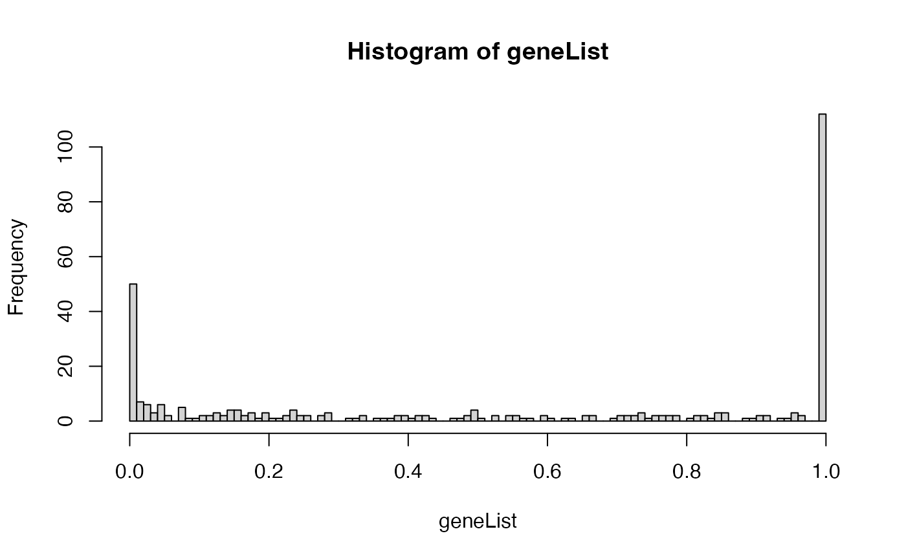

Class "topGOdata"
topGOdata-class.RdTODO: The node attributes are environments containing the genes/probes annotated to the respective node
If genes is a numeric vector than this should represent the gene's score. If it is factor it should discriminate the genes in interesting genes and the rest
TODO: it will be a good idea to replace the allGenes and allScore with an ExpressionSet class. In this way we can use tests like global test, globalAncova.... – ALL variables starting with . are just for internal class usage (private)
Objects from the Class
Objects can be created by calls of the form new("topGOdata", ontology, allGenes, geneSelectionFun, description, annotationFun, ...).
~~ describe objects here ~~
Slots
description:Object of class
"character"~~ontology:Object of class
"character"~~allGenes:Object of class
"character"~~allScores:Object of class
"ANY"~~geneSelectionFun:Object of class
"function"~~feasible:Object of class
"logical"~~nodeSize:Object of class
"integer"~~graph:Object of class
"graphNEL"~~expressionMatrix:Object of class
"matrix"~~phenotype:Object of class
"factor"~~
Methods
- allGenes
signature(object = "topGOdata"): ...- attrInTerm
signature(object = "topGOdata", attr = "character", whichGO = "character"): ...- attrInTerm
signature(object = "topGOdata", attr = "character", whichGO = "missing"): ...- countGenesInTerm
signature(object = "topGOdata", whichGO = "character"): ...- countGenesInTerm
signature(object = "topGOdata", whichGO = "missing"): ...- description<-
signature(object = "topGOdata"): ...- description
signature(object = "topGOdata"): ...- feasible<-
signature(object = "topGOdata"): ...- feasible
signature(object = "topGOdata"): ...- geneScore
signature(object = "topGOdata"): ...- geneSelectionFun<-
signature(object = "topGOdata"): ...- geneSelectionFun
signature(object = "topGOdata"): ...- genes
signature(object = "topGOdata"): A method for obtaining the list of genes, as a character vector, which will be used in the further analysis.- numGenes
signature(object = "topGOdata"): A method for obtaining the number of genes, which will be used in the further analysis. It has the same effect as:lenght(genes(object)).- sigGenes
signature(object = "topGOdata"): A method for obtaining the list of significant genes, as a character vector.- genesInTerm
signature(object = "topGOdata", whichGO = "character"): ...- genesInTerm
signature(object = "topGOdata", whichGO = "missing"): ...- getSigGroups
signature(object = "topGOdata", test.stat = "classicCount"): ...- getSigGroups
signature(object = "topGOdata", test.stat = "classicScore"): ...- graph<-
signature(object = "topGOdata"): ...- graph
signature(object = "topGOdata"): ...- initialize
signature(.Object = "topGOdata"): ...- ontology<-
signature(object = "topGOdata"): ...- ontology
signature(object = "topGOdata"): ...- termStat
signature(object = "topGOdata", whichGO = "character"): ...- termStat
signature(object = "topGOdata", whichGO = "missing"): ...- updateGenes
signature(object = "topGOdata", geneList = "numeric", geneSelFun = "function"): ...- updateGenes
signature(object = "topGOdata", geneList = "factor", geneSelFun = "missing"): ...- updateTerm<-
signature(object = "topGOdata", attr = "character"): ...- usedGO
signature(object = "topGOdata"): ...
Examples
## load the dataset
data(geneList)
library(package = affyLib, character.only = TRUE)
## the distribution of the adjusted p-values
hist(geneList, 100)

## how many differentially expressed genes are:
sum(topDiffGenes(geneList))
#> [1] 50
## build the topGOdata class
GOdata <- new("topGOdata",
ontology = "BP",
allGenes = geneList,
geneSel = topDiffGenes,
description = "GO analysis of ALL data: DE B-cell vs T-cell",
annot = annFUN.db,
affyLib = affyLib)
#>
#> Building most specific GOs .....
#> ( 1676 GO terms found. )
#>
#> Build GO DAG topology ..........
#> ( 4296 GO terms and 9327 relations. )
#>
#> Annotating nodes ...............
#> ( 316 genes annotated to the GO terms. )
## display the GOdata object
GOdata
#>
#> ------------------------- topGOdata object -------------------------
#>
#> Description:
#> - GO analysis of ALL data: DE B-cell vs T-cell
#>
#> Ontology:
#> - BP
#>
#> 323 available genes (all genes from the array):
#> - symbol: 1095_s_at 1130_at 1196_at 1329_s_at 1340_s_at ...
#> - score : 1 1 0.62238 0.541224 1 ...
#> - 50 significant genes.
#>
#> 316 feasible genes (genes that can be used in the analysis):
#> - symbol: 1095_s_at 1130_at 1196_at 1329_s_at 1340_s_at ...
#> - score : 1 1 0.62238 0.541224 1 ...
#> - 50 significant genes.
#>
#> GO graph (nodes with at least 1 genes):
#> - a graph with directed edges
#> - number of nodes = 4296
#> - number of edges = 9327
#>
#> ------------------------- topGOdata object -------------------------
#>
##########################################################
## Examples on how to use the methods
##########################################################
## description of the experiment
description(GOdata)
#> [1] "GO analysis of ALL data: DE B-cell vs T-cell"
## obtain the genes that will be used in the analysis
a <- genes(GOdata)
str(a)
#> chr [1:316] "1095_s_at" "1130_at" "1196_at" "1329_s_at" "1340_s_at" ...
numGenes(GOdata)
#> [1] 316
## obtain the score (p-value) of the genes
selGenes <- names(geneList)[sample(1:length(geneList), 10)]
gs <- geneScore(GOdata, whichGenes = selGenes)
print(gs)
#> 35523_at 39332_at 31803_at 895_at 1347_at 35403_at
#> 1.611899e-06 1.000000e+00 1.000000e+00 5.610940e-06 2.827930e-03 1.000000e+00
#> 2033_s_at 40124_at 1793_at 474_at
#> 4.774523e-01 7.621456e-01 1.000000e+00 7.561045e-01
## if we want an unnamed vector containing all the feasible genes
gs <- geneScore(GOdata, use.names = FALSE)
str(gs)
#> num [1:316] 1 1 0.622 0.541 1 ...
## the list of significant genes
sg <- sigGenes(GOdata)
str(sg)
#> chr [1:50] "1347_at" "1792_g_at" "31864_at" "32074_at" "32861_s_at" ...
numSigGenes(GOdata)
#> [1] 50
## to update the gene list
.geneList <- geneScore(GOdata, use.names = TRUE)
GOdata ## more available genes
#>
#> ------------------------- topGOdata object -------------------------
#>
#> Description:
#> - GO analysis of ALL data: DE B-cell vs T-cell
#>
#> Ontology:
#> - BP
#>
#> 323 available genes (all genes from the array):
#> - symbol: 1095_s_at 1130_at 1196_at 1329_s_at 1340_s_at ...
#> - score : 1 1 0.62238 0.541224 1 ...
#> - 50 significant genes.
#>
#> 316 feasible genes (genes that can be used in the analysis):
#> - symbol: 1095_s_at 1130_at 1196_at 1329_s_at 1340_s_at ...
#> - score : 1 1 0.62238 0.541224 1 ...
#> - 50 significant genes.
#>
#> GO graph (nodes with at least 1 genes):
#> - a graph with directed edges
#> - number of nodes = 4296
#> - number of edges = 9327
#>
#> ------------------------- topGOdata object -------------------------
#>
GOdata <- updateGenes(GOdata, .geneList, topDiffGenes)
GOdata ## the available genes are now the feasible genes
#>
#> ------------------------- topGOdata object -------------------------
#>
#> Description:
#> - GO analysis of ALL data: DE B-cell vs T-cell
#>
#> Ontology:
#> - BP
#>
#> 316 available genes (all genes from the array):
#> - symbol: 1095_s_at 1130_at 1196_at 1329_s_at 1340_s_at ...
#> - score : 1 1 0.62238 0.541224 1 ...
#> - 50 significant genes.
#>
#> 316 feasible genes (genes that can be used in the analysis):
#> - symbol: 1095_s_at 1130_at 1196_at 1329_s_at 1340_s_at ...
#> - score : 1 1 0.62238 0.541224 1 ...
#> - 50 significant genes.
#>
#> GO graph (nodes with at least 1 genes):
#> - a graph with directed edges
#> - number of nodes = 4296
#> - number of edges = 9327
#>
#> ------------------------- topGOdata object -------------------------
#>
## the available GO terms (all the nodes in the graph)
go <- usedGO(GOdata)
length(go)
#> [1] 4296
## to list the genes annotated to a set of specified GO terms
sel.terms <- sample(go, 10)
ann.genes <- genesInTerm(GOdata, sel.terms)
str(ann.genes)
#> List of 10
#> $ GO:0002863: chr [1:6] "1852_at" "258_at" "259_s_at" "32861_s_at" ...
#> $ GO:0001843: chr [1:4] "1634_s_at" "1830_s_at" "282_at" "41445_at"
#> $ GO:0140014: chr [1:95] "1196_at" "1542_at" "1584_at" "160025_at" ...
#> $ GO:0055085: chr [1:12] "160040_at" "1634_s_at" "1830_s_at" "1852_at" ...
#> $ GO:0051494: chr [1:10] "1925_at" "1996_s_at" "32813_s_at" "33456_at" ...
#> $ GO:0035249: chr [1:3] "1069_at" "1852_at" "259_s_at"
#> $ GO:0010557: chr [1:73] "1069_at" "1095_s_at" "1130_at" "1165_at" ...
#> $ GO:0071104: chr [1:2] "40458_at" "506_s_at"
#> $ GO:0042770: chr [1:15] "1544_at" "1792_g_at" "1803_at" "1833_at" ...
#> $ GO:0030518: chr "32548_at"
## the score for these genes
ann.score <- scoresInTerm(GOdata, sel.terms)
str(ann.score)
#> List of 10
#> $ GO:0002863: num [1:6] 0.553663 1 0.828082 0.000395 1 ...
#> $ GO:0001843: num [1:4] 1 1 0.0128 1
#> $ GO:0140014: num [1:95] 0.622 1 1 0.235 0.271 ...
#> $ GO:0055085: num [1:12] 0.271 1 1 0.554 0.828 ...
#> $ GO:0051494: num [1:10] 0.746 1 0.816 0.898 0.769 ...
#> $ GO:0035249: num [1:3] 0.24 0.554 0.828
#> $ GO:0010557: num [1:73] 0.24 1 1 1 1 ...
#> $ GO:0071104: num [1:2] 7.21e-05 2.38e-04
#> $ GO:0042770: num [1:15] 0.00306 0.00661 0.07307 0.0251 1 ...
#> $ GO:0030518: num 1
## to see the number of annotated genes
num.ann.genes <- countGenesInTerm(GOdata)
str(num.ann.genes)
#> Named int [1:4296] 15 5 4 1 1 1 72 37 3 11 ...
#> - attr(*, "names")= chr [1:4296] "GO:0000018" "GO:0000022" "GO:0000045" "GO:0000054" ...
## to summarise the statistics
termStat(GOdata, sel.terms)
#> Annotated Significant Expected
#> GO:0002863 6 1 0.95
#> GO:0001843 4 0 0.63
#> GO:0140014 95 7 15.03
#> GO:0055085 12 4 1.90
#> GO:0051494 10 2 1.58
#> GO:0035249 3 0 0.47
#> GO:0010557 73 17 11.55
#> GO:0071104 2 2 0.32
#> GO:0042770 15 3 2.37
#> GO:0030518 1 0 0.16